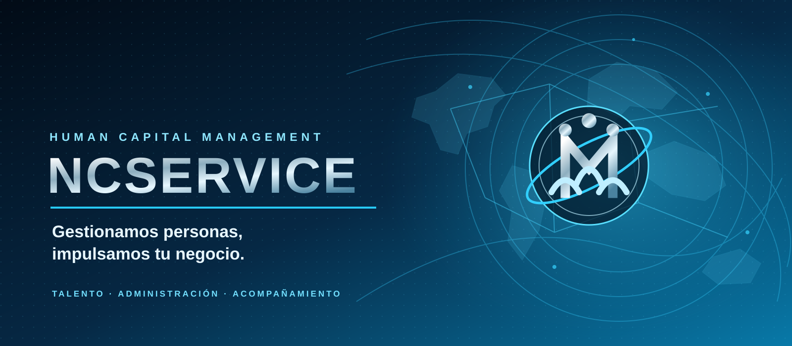

Reclutamiento y selección
Identificación y evaluación de perfiles para cada operación.

Tu socio estratégico en gestión de talento. Integramos reclutamiento, contratación, administración y acompañamiento para empresas que ponen a las personas en el centro.
NCSERVICE apoya a organizaciones en reclutamiento, selección, contratación y administración de personal. Integramos procesos y coordinación para entregar una operación ordenada y una experiencia cercana para los colaboradores.
Nuestro enfoque combina servicio, continuidad operacional y atención a las necesidades de cada empresa cliente.
Identificación y evaluación de perfiles para cada operación.
Coordinación de documentación, contratación y procesos administrativos.
Coordinación de pagos y orientación a los trabajadores.